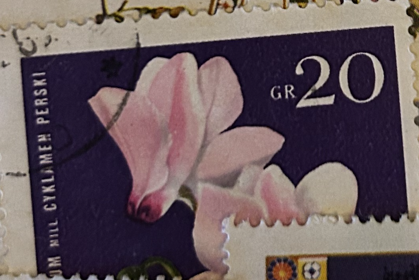
| SOURCE | TITLE| IMAGE MATCH | click to source page |
| HipStamp | Poland 1279: 20g Persian Cyclamen (Cyclamen persicum), CTO, F-VF | Europe - Poland, General Issue Stamp / HipStamp | 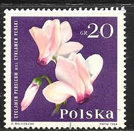 |
| 26 Spotify covers ideas | postage stamp art, post stamp, postal stamps | 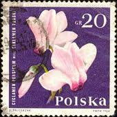 | |
| eBay | Lightly Hinged Flowers European Stamps for sale | eBay | 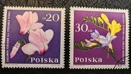 |
| HipStamp | Browse Listings in Europe > Poland / HipStamp | 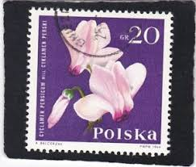 |
| Shutterstock | Karnal Haryana India -july 20th 2025-closeup Stock Photo 2704429199 | Shutterstock | 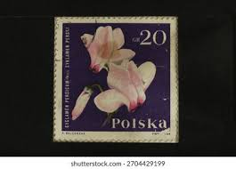 |
| Todocolección | china 1959 -03c ”chu kwang tower” - Buy Antique stamps of China on todocoleccion | 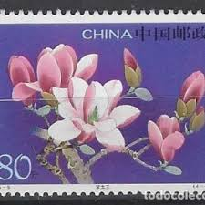 |
| Etsy | 5 Shooting Star Wildflower Stamps, Vintage Unused USPS 29 Cent Postage Stamps, 1992 Gummed - Etsy New Zealand | 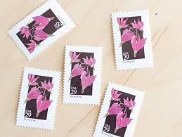 |
| Alamy | Poland - CIRCA 1964: A Postage stamp printed in Poland shows Proposed Westerplatte Monument in memory for the Polish defenders at 1939, Struggle and M Stock Photo - Alamy | 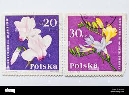 |
| 2005-5 Scott 3425-28 Yulan Magnolia - China Stamps | 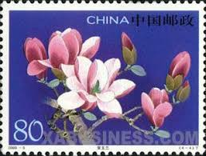 | |
| HipStamp | Canada 2625 (O) "2013" | Canada, General Issue Stamp / HipStamp | 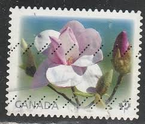 |
| BANDURT.1017 ITION BANDUS 12017 Ind ndonosia nesia C...... 3000 Lentona comera 3000 o 3000 Indonosia osia Indon Antidetron 0주 Indonosia 3000 3000 ET Πаνа Fauna | 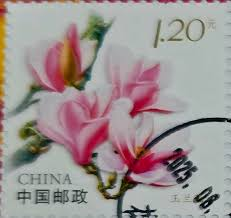 | |
| eBay | Japanese Flowers Stamps for sale | eBay | 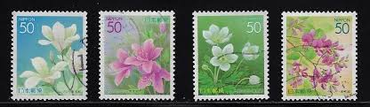 |
| ebid.net | POLAND 1964, Garden Flowers, Full Set of 12 Stamps, MNH on eBid United States | 207933212 | 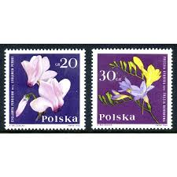 |
| Wikimedia.org | File:Stamp of Albania - 2001 - Colnect 370854 - Southern Magnolia Magnolia grandiflora.jpeg - Wikimedia Commons | 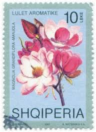 |
| eBay | Moldovan Flowers Miniature Sheet Postal Stamps for sale | eBay | 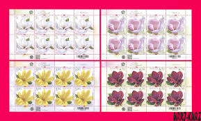 |
| eBay UK | Flowers Postal Stamps for sale | eBay UK | |
| Mystic Stamp Company | 4176-85 - 2007 41c Beautiful Blooms - Mystic Stamp Company | 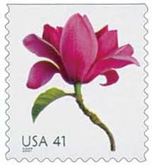 |
| eBay | Почтовые марки Молдовы - огромный выбор по лучшим ценам | eBay | 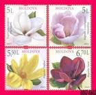 |
| Etsy | One 1 Unused Postage Stamp - Beautiful Blooms: Magnolia // 41 Cent Stamps - Etsy Australia | 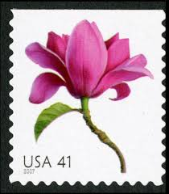 |
| eBay | Poland 1964 Garden Flowers 20g Cyclamen sheetlet CTO used with gum | eBay | 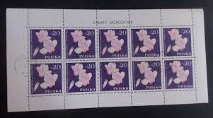 |
| eBay | Superb Postal Stamps for sale | eBay | 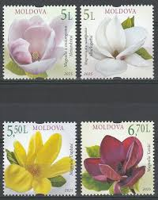 |
| Etsy | One 1 Unused Postage Stamp - Beautiful Blooms: Magnolia // 41 Cent Stamps - Etsy India | 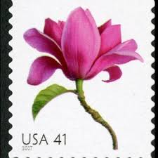 |
| 81 MAGNOLIA | MONARDA (Bee Balm) | STAMPS ideas | magnolia, bee balm, stamp | 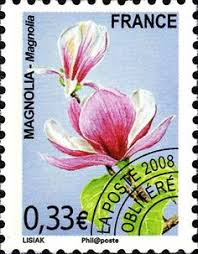 | |
| Etsy | 10 Vintage Unused Wildflower Shooting Star Mail Stamps / Botanical Pink Flower USPS Postage / 29 Cents US - Etsy | 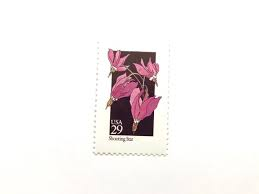 |
| Mystic Stamp | 4168 - 2007 41c Beautiful Blooms: Magnolia, Coil - Mystic Stamp Company | 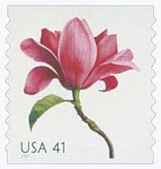 |
| eBay | Moldovan Flowers Postal Stamps for sale | eBay | 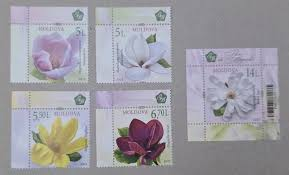 |
| eBay | Japan 2004 Tokyo Prefecture Flowers 50Y Complete Used Set Sc# Z632-Z635 | eBay | 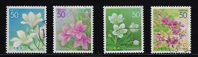 |
| Etsy | 5 Shooting Star Wildflower Stamps, Vintage Unused USPS 29 Cent Postage Stamps, 1992 Gummed - Etsy | 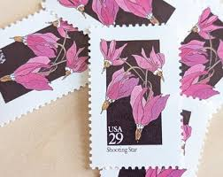 |
| Minted | Garden Botanical Vintage Set | Wedding Stamps | Each Set Will Mail a 1 oz Letter | 10 Sets (50 Stamps Total) Postage Stamps by Heritage Post House | Minted | 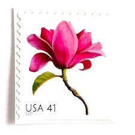 |
| Etsy | 10 Vintage Unused Wildflower Shooting Star Mail Stamps / Botanical Pink Flower USPS Postage / 29 Cents US - Etsy Australia | 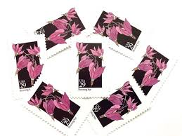 |
| eBay | New Zealand 2004 Souvenir Sheet #1954a Flowers - MNH | eBay | 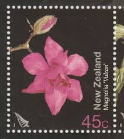 |
| Mystic Stamp Company | 3028 - 1996 32c Winter Garden Flowers: Snowdrop - Mystic Stamp Company | 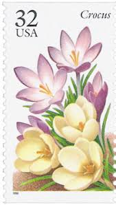 |
| eBay | Moldova 2025 Flowers, Magnolia 4 MNH stamps + Block | eBay | 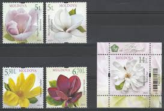 |
| Philatelicmarket - Macedonia - 100th birth anniversary of Blaže Koneski 2021-04-05 sheet 3x3; copies 6000; design Dimitar Kondovski | פייסבוק | 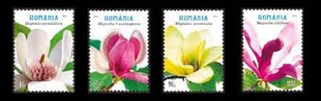 | |
| eBay | W CANADA 2621 FLOWERS MAGNOLIAS SOUVENIR SHEET | eBay | 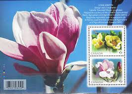 |
| Freestampcatalogue.com | Stamps from Moldova - Freestampcatalogue.com - The free online stampcatalogue with over 500.000 stamps listed. | 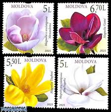 |
| Alamy | CHINA - CIRCA 2005: A stamp printed in China shows 2005-28 The Emblem and Mascots of the Games of the XXIX Olympiad , circa 2005 Stock Photo - Alamy | 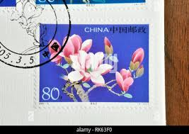 |
| HipStamp | Sweden 2015 used (Brev) Magnolia | Europe - Sweden, Stamp / HipStamp | 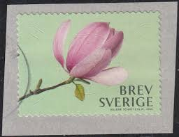 |
| Etsy | Buy 1999 Romania Flower Postage Stamps / Magnolia, Hibiscua, Clematis, Camellia / Garden Diary, Nature Junk Journal, Altered Book Images, ACEO Online in India - Etsy | 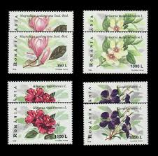 |
| eBay | Japan Z632-Z635 Flowers of Tokyo (4 USED Stamps, 2004) | eBay | 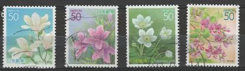 |
| STEVE LEVINE STAMPS-PLUS | USA Scott # U 631 1994 29c Football - Mint Cut Square - SteveLevineStamps-Plus | 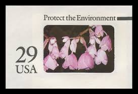 |
| Arpin Philately | Buy Canada #2623 - Eskimo (2013) P (63¢) | Arpin Philately | 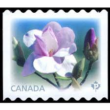 |
| eBay | 3478-81 3481 elusive Lilly's Flower issue 4 .34c denominated coil singles MNH | eBay | 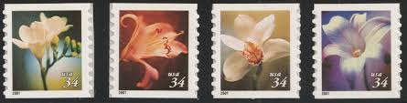 |
| eBay | Sweden Flowers Stamps for sale | eBay | 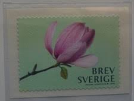 |
| Catawiki | Rwanda 1968 - 27 progressive color proof prints in blocks of 4 from n° 253/262 series Flowers. - auction online Catawiki | 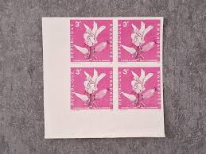 |
| Etsy | 10 Spreading Pogonia Stamps, 20 Cent 1984 Unused Postage Stamps, Cleistes Divaricata, Orchid, Vintage Collectible Stamps - Etsy UK | 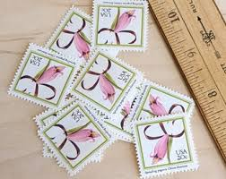 |
| eBay UK | Japanese Flowers Postal Stamps for sale | eBay UK | 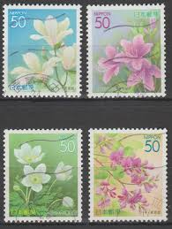 |
| Edelweiss Post | 10 Lilac Pink Flower Forever Stamps Unused White Pink Lavender and Gre – Edelweiss Post | 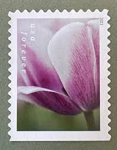 |
| Find Your Stamps Value | Flowers: Magnolia 7.10z Gold & black stamp price, value | 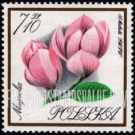 |
| kcactive.co.uk | Mint Never Hinged/MNH Flowers Canadian Stamp Booklets 2023 US First-Class Forever Stamps - Tulip Blossoms Booklet - US Stamps Collectible Postage Stamps | 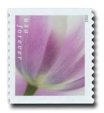 |
| Etsy | 10 sellos postales antiguos sin usar con diseño de estrella fugaz de flores silvestres / Franqueo de USPS con flores rosas botánicas / 29 centavos de dólar estadounidense - Etsy España | |
| buyhungarianstamps.com | 4278-4281 Romania - Shrub Flowers (MNH) – Eastern Europe Postage Stamps | Hungaria Stamp Exchange | |
| eBay | Canada Harvey Shuter, Toronto private FDCs (2) - 2013 Magnolia flowers | eBay | |
| eBay | Flowers First Day Cover European Stamps for sale | eBay | |
| eBay | Flowers Canadian Mint Stamps for sale | eBay | |
| eBay | Moldova 2025 Magnolia Flowers Flora 4Sheets**MNH | eBay | |
| galeriaatm.com | AUSTRIA (2020). Water lily & tree blossoms (Flowers - Summer 2020) - ''phila''-Toscana ` 20 - Inform. Set 6 values | |
| Etsy | Buy 10 Spreading Pogonia Stamps, 20 Cent 1984 Unused Postage Stamps, Cleistes Divaricata, Orchid, Vintage Collectible Stamps Online in India - Etsy | |
| eBay | MAGNOLIA = FLOWER Picture Postage stamp LIMITED ISSUE Canada 2014 [p83fl5/2] | eBay | |
| filatelia.md | Magnolia flowers | SE ”Posta Moldovei”. Philately. |
{kind=link}